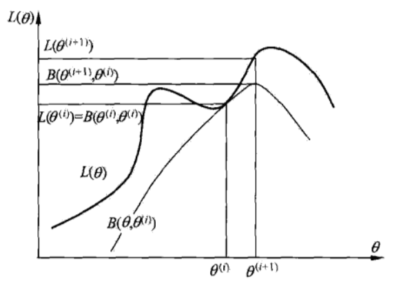

EM算法是一种迭代算法。用于含有隐变量(hidden variable)的概率模型参数的极大似然估计，或极大后验概率估计。
EM算法每次迭代由两步组成:
- E步，求期望
- M步，求极大
因此，EM算法也称为期望极大算法。
本章首先叙述EM算法，然后讨论算法的收敛性，接着介绍EM算法中的高斯混合模型的学习，最后叙述EM算法的推广——GEM算法。
12.1 EM算法的引入
概率模型有时既含有观测变量，又含有隐变量或潜在变量。
如果概率模型的变量都是观测变量，那么给定数据，可以直接用极大似然估计法或贝叶斯估计法估计模型参数。
如果概率模型含有隐变量，则不能简单地使用以上估计方法。
EM算法就是含有隐变量的概率模型参数的极大似然估计法，或极大后验概率估计法。
在这里，我们只讨论极大似然估计法。
12.1.1 EM算法
一般地，用Y表示观测随机变量的数据，Z表示隐随机变量的数据。Y和Z连在一起称为完全数据，观测数据Y又称为不完全数据。
假设给定观测数据Y，其概率分布是，其中是需要估计的模型参数，那么不完全数据Y的似然函数是，对数似然函数；假设Y和Z的联合概率分布是，那么完全数据的对数似然函数是。
EM算法通过迭代求的极大似然估计。每次迭代包含两步：E步，求期望；M步，求极大化。
算法12.1(EM算法)
输入：观测变量数据Y，隐变量数据Z，联合分布，条件分布；
输出：模型参数。
(1)选择参数的初值，开始迭代；
(2)E步：记为第i次迭代参数的估计值，在第i+1次迭代的E步，计算：
这里，是在给定观测数据Y和当前的参数估计下隐变量数据Z的条件概率分布；
(3)M步：求使极大化的，确定第i+1次迭代的参数的估计值
(4)重复第(2)步和第(3)步，直到收敛。
式(12.1)的函数是EM算法的核心，称为Q函数。
定义12.1(Q函数) 完全数据的对数似然函数关于在给定观测数据Y和当前参数下对未观测数据Z的条件概率分布的期望称为Q函数，即
下面关于EM算法作几点说明：
步骤(1) 参数的初值可以任意选择，但需注意EM算法对初值是敏感的。
步骤(2) E步求。Q函数式中Z是未观测数据，Y是观测数据。(注意：的第1个变量表示要极大化的参数，第2个变量表示参数的当前估计值)。每次迭代实际在求Q函数及其极大。
步骤(3) M步求的极大化，得到，完成一次迭代，后面将证明每次迭代使似然函数增大或达到局部极值。
步骤(4) 给出停止迭代的条件，一般是对较小的正数，，若满足
或者
则停止迭代。
12.1.2 EM算法的导出
为什么EM算法能够近似实现对观测数据的极大似然估计呢？
下面通过近似求解观测数据的对数似然函数的极大化问题来导出EM算法，由此可以清楚地看出EM算法的作用。
对于一个含有隐变量的概率模型，目标是极大化观测数据(不完全数据)Y关于参数的对数似然函数，即极大化
式(12.4)中有未观测数据并有包含和(或积分)的对数。
事实上，EM算法是通过迭代逐步近似极大化的。假设在第i次迭代后的估计值是。我们希望新估计值能使增加，即，并逐步达到极大值。为此，考虑两者的差:
利用Jensen不等式得到其下界:
Jensen不等式：，其中，。
令
则
即函数是的一个下界，而且由式(12.5)可知，
因此，任何可以使增大的，也可以使增大，为了使有尽可能大的增长，选择使达到极大，即
现在求的表达式，省去对的极大化而言是常数的项，由式(12.8)、式(12.5)及式(12.2)，有
式(12.9)等价于EM算法的一次迭代，即求Q函数及其极大化。EM算法是通过不断求解下界的极大化逼近求解对数似然函数极大化的算法。
下图给出EM算法的直观解释。图中上方曲线为，下方曲线为。
根据式(12.6)，为对数似然函数的下界。
根据式(12.7)，两个函数在点处相等。
根据式(12.8)和式(12.9)，EM算法找到下一个点使函数极大化，也使函数极大化。
由于，函数的增加，保证对数似然函数在每次迭代中也是增加的。
EM算法在点重新计算Q函数值，进行下一次迭代。在这个过程中，对数似然函数不断增大。从图可以推断出EM算法不能保证找到全局最优值。

12.1.3 EM算法在非监督学习中的应用
当训练数据只有输入没有相应的输出标签，如，从这样的数据学习模型称为非监督学习问题。
EM算法可以用于生成模型的非监督学习。生成模型由联合概率分布P(X,Y)表示，可以认为非监督学习训练数据是联合概率分布产生的数据。X为观测数据，Y为未观测数据。
12.2 EM算法的收敛性
EM算法提供一种近似计算含有隐变量概率模型的极大似然估计的方法。对于EM算法，需要回答两个问题：EM算法得到的估计序列是否收敛？如果收敛，是否收敛到全局最大值或局部极大值？
下面给出EM算法收敛性相关的两个定理：
定理12.1 设为观测数据的似然函数，为EM算法得到的参数估计序列，为对应的似然函数序列，则是单调递增的，即
证明 由于
取对数有
由式(12.3)
令
于是对数似然函数可以写成
在式(12.12)中分别取为和并相减，有
为证式(12.10)，只需证式(12.13)右端是非负的。式(12.13)右端的第1项，由于使达到极大，所以有：
其第2项，由式(12.11)可知:
注意:这里的不等号由Jensen不等式得到。
由式(12.14)和式(12.15)可知式(12.13)右端是非负的。
定理12.2 设为观测数据的对数似然函数，为EM算法得到的参数估计序列，为对应的对数似然函数序列。
(1)如果有上界，则收敛到某一值
(2)在函数与满足一定条件下，由EM算法得到的参数估计序列的收敛值是的稳定点。
证明
(1)由的单调性及的有界性立即得到。
(2)证明从略，参考文献:A View of the Em Algorithm that Justifies Incremental, Sparse, and other Variants
EM算法的收敛性包含关于对数似然函数序列的收敛性和关于参数估计序列的收敛性两层意思。
在应用中，初值的选择变得非常重要，常用的方法是选取几个不同的初值进行迭代，然后对得到的各个估计值加以比较，从中选择最好的。
12.3 EM算法在高斯混合模型学习中的应用
在许多情况下，EM算法是学习高斯混合模型的有效方法。
12.3.1 高斯混合模型
定义12.2(高斯混合模型) 高斯混合模型是指具有如下形式的概率分布模型:
其中，是系数，，；是高斯分布密度，，
称为第k个分模型。
一般混合模型可以由任意概率分布密度代替式(12.17)中的高斯分布密度，我们只介绍最常见的高斯混合模型。
12.3.2 高斯混合模型参数估计的EM算法
假设观测数据由高斯混合模型生成，
其中，。我们用EM算法估计高斯混合模型的参数。
1. 明确隐变量，写出完全数据的对数似然函数
观测数据，是这样产生的:
首先依概率选择第k个高斯分布分模型；
然后依第k个分模型的概率分布生成观测数据。这时，观测数据，是已知的；
反映观测数据来自第k个分模型的数据是未知的，k=1,2,…,K，以隐变量表示，其定义如下:
是0-1随机变量。
有了观测数据及未观测数据，那么完全数据是
于是，可以写出完全数据的似然函数:
式中，，。
那么，完全数据的对数似然函数为:
2.EM算法的E步:确定Q函数
这里需要计算，记为。
关于是在当前模型参数下第j个观测数据来自第k个分模型的概率，称为分模型k对观测数据的响应度。
将及代入式（12.20）即得
3. 确定EM算法的M步
迭代的M步是求函数对的极大值，即求新一轮迭代的模型参数:
用，及，k=1,2,…,K，表示的各参数。求，只需将式(12.21)分别对，求偏导数并令其为0，即可得到；求是在条件下求偏导数并令其为0得到的(此处使用拉格朗日乘子法求解)。结果如下：
重复以上计算，直到对数似然函数值不再有明显的变化为止。
算法12.2(高斯混合模型参数估计的EM算法)
输入：观测数据,高斯混合模型
输出：高斯混合模型参数
(1)取参数的初始值开始迭代
(2)E步：依据当前模型参数，计算分模型k对观测数据的响应度
(3)M步：计算新一轮迭代的模型参数
(4)重复第(2)步和第(3)步，直到收敛。
12.4 EM算法的推广
EM算法还可以解释为F函数的极大-极大算法。
12.4.1 F函数的极大-极大算法
首先引进F函数并讨论其性质。
定义12.3(F函数) 假设隐变量数据Z的概率分布为，定义分布与参数的函数如下：
称为F函数。式中是分布的熵。
通常假设是的连续函数，因而是和的连续函数。
引理12.1 对于固定的，存在唯一的分布极大化，这时由下式给出:
并且随连续变化。
证明: 对于固定的，可以求得使达到极大的分布。为此，引进拉格朗日乘子，拉格朗日函数为 :
将其对求偏导数，并令偏导数等于0:
得出
由此推出与成比例
再从约束条件得式(12.26)(注意：为什么可以得到式(12.26)这个结论)
由假设是的连续函数，得到是的连续函数。
引理12.2 若，则
由以上引理，可以得到关于EM算法用F函数的极大-极大算法的解释。
定理12.3 设为观测数据的对数似然函数，，i=1,2,…,为EM算法得到的参数估计序列，函数由式(12.25)定义。
如果在和有局部极大值，那么也在有局部极大值。
如果在和达到全局最大值，那么也在达到全局最大值。
证明：由引理12.1和引理12.2可知，对任意成立。特别地，对于使，有
为了证明是的极大点，需要证明不存在接近的点，使。
假如存在这样的点，那么应有，这里。但因是随连续变化的，应接近，这与和是的局部极大点的假设矛盾。
定理12.4 EM算法的一次迭代可由F函数的极大-极大算法实现。
设为第i次迭代参数的估计，为第i次迭代函数的估计。在第i+1次迭代的两步为:
(1)对固定的，求使极大化。
(2)对固定的，求使极大化
证明
(1)由引理12.1，对于固定的，
使极大化。此时，
由的定义式(12.3)有
(2)固定，求使极大化。得到：
通过以上两步完成了EM算法的一次迭代。
由此可知，由EM算法与F函数的极大-极大算法得到的参数估计序列，i=1,2,…,是一致的。
12.4.2 GEM算法
算法12.3(GEM算法1)
输入：观测数据,F函数
输出：模型参数
(1)初始化参数，开始迭代
(2)第i+1次迭代
第1步:记为参数的估计值，计算
(3)第2步:求使：
(4)重复(2)和(3)，直到收敛。
当参数的维数为d时，可采用一种特殊的GEM算法，它将EM算法的M步分解为d次条件极大化，每次只改变参数向量的一个分量，其余分量不改变。
算法9.5(GEM算法3)
输入:观测数据，Q函数
输出:模型参数
(1) 初始化参数，开始迭代
(2)第i+1次迭代，
第1步：记为参数的估计值，计算
(3)第2步:进行d次条件极大化:
首先，在保持不变的条件下求使达到极大的
然后，在，，j=3,4,…,k的条件下求使达到极大的；
如此继续，经过d次条件极大化，得到使得
(4)重复(2)和(3)。直到收敛。